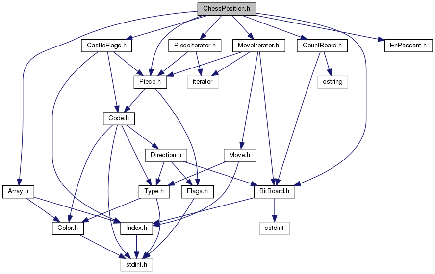

cwchessboard — A C++ chessboard tool set for gtkmm.
A chess tool set was added to this project! In 2006 this project existed of just a widget. However good the widget is, it's still a lot of work to write a chess application around it. Therefore I added a "chess aware" class: cwchess::ChessPosition and a more powerful widget class cwmm::ChessPositionWidget that provides an easy to use interface: it's a chess board widget that is kept in sync with a ChessPosition part of it. A test application (
tstcpp.cc) shows how to use this class. You can read more about the C++ ChessPosition class at
below.
C++ programmers want to read this documentation:
C programmers can still use the basic widget:
And last but not least:
About the chessboard widget
CwChessboard (ChessboardWidget) is a scalable chessboard widget using vector graphics for the chess pieces. It is possible to give each square a different color, useful to highlight squares in for example an chess analysis program. On top of that markers can be used; a colored outline around the square. There is support for a cursor that marks the square that the pointer device is hovering over and one can draw arrows from any square to any square in different colors. Of course, it is possible to draw 'floating' pieces at any point with pixel precision (mostly useful for moving pieces around with a mouse). Finally, the widget has two HUD layers that can be customized.
The drawing speed of the widget is extremely high, as everything is loaded into (server side) pixmap's and blitted into place only when an update of that area is really necessary. This means basically that all drawing is done with hardware acceleration on the video card. The exception here is resizing: when the widget is actually resized - everything has to be redrawn and sent to the server again. Resizing is therefore slow. It is assumed however that resizing is rarely done; as opposed to, for example, changing the background colors of all 64 squares as a result of moving a piece; which could be done almost instantly.
The chessboard exists of several virtual layers.
- The layer above that is HUD layer 0. This layer could be used to add some texture to the squares. It is also used for the start of arrows, so that arrows begin from underneath a piece.
See (GTK+) CwChessboardClass::draw_hud_layer.
See (gtkmm) draw_hud_layer .
- The layer above that is HUD layer 1. This layer contains the rest of the arrows so that they are drawn on top of the pieces. Note that arrows have an alpha value of 0.5, so that those pieces remain visible.
See (GTK+) cw_chessboard_add_arrow.
See (gtkmm) add_arrow .
About the chess position class
ChessPosition is independent of ChessboardWidget: you can very well use it without using the widget. In fact, it wasn't even written with the widget in mind: it was written with a chess analysis application and therefore speed in mind. Looking at the source code you'd probably think "this can't be fast", but C++ code can be deceiving. The assembly code resulting from a compile with optimization has constantly been taken into account during the development of this tool set.
The features of ChessPosition are therefore:
- Performance (see below).
- Full control over the chessboard and pieces.
- Ability to run over any combination of pieces on the board.
- Ability to generate all legal (and only legal) moves for a given piece.
- Possibility to check if a given move is legal.
- Full support for FEN codes.
- Allows to query whether there is a check, or double check.
- Keeps track of the number of times each color attacks any given square.
The 'Position setup' member functions allow one to clear the board or put up the initial position with a single call, arbitrarily remove or add pieces, swap colors, skip a move, set explicitely whose turn it is, etc.
Performance
A test application is included that plays random games by generating every possible legal move, storing the moves in a static array, generating a random number to pick one of the moves and then executes the move, until it is either mate, stale mate or the 50 move rule applies (the average game is 200 moves that way). This is repeated until 10,000 games are finished. The application consistently produces over 1,127,000 moves per second (compiled with g++ version 4.3.1, using -O3 optimization, running on a single core of a QX6700 @ 2.66 GHz. (91,000 moves per second without optimization)). Note that those are executed moves (ply). If you count the generation of Move objects (all possible moves, without executing them) then it does 22,657,000 Moves per second.
Roughly one can state that executing a given Move takes 300 ns on average while running over all moves of a given position takes 20 ns per generated Move. Making a copy of a ChessPosition also takes roughly 20 ns.
This should be significantly less than the time needed to evaluate a position (ie, Rybka does 75,000 nodes per second on a single core of my cpu).

Of course ChessPosition relies on several other core classes, the most important of which are:
- Color The color of the pieces (black or white) (1 byte).
- Index An index to a square on the board, or one-past the end (to either side) (1 byte).
- Type The type of a piece (pawn, rook, etc), or 'nothing' (1 byte).
- Code A colored piece: the combination of Color and Type into one (also 1 byte).
- Flags Some state information (for internal use, 1 byte).
- Piece Combination of Code and Flags (2 bytes).
- BitBoard A one-bit-per-square chessboard (8 bytes).
- PieceIterator Iterator to iterate over pieces (or actually, bits in a BitBoard).
- MoveIterator Iterator to iterate over moves.
The following class is provided to write several of the above objects to an ostream (namely, Type, Piece, Index and Move):